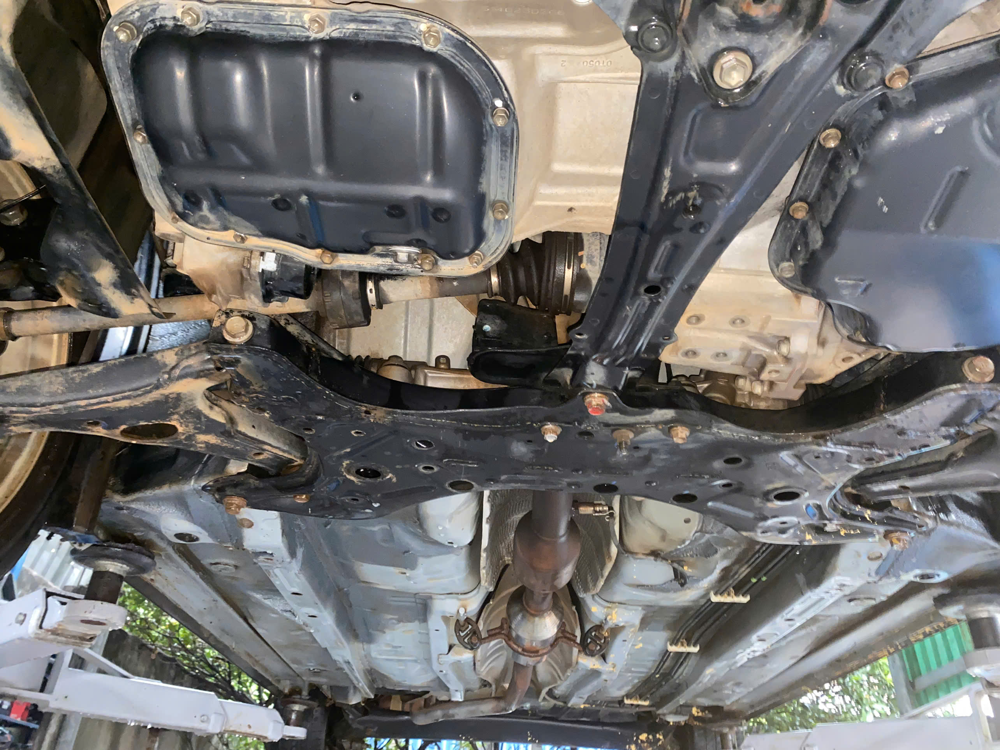
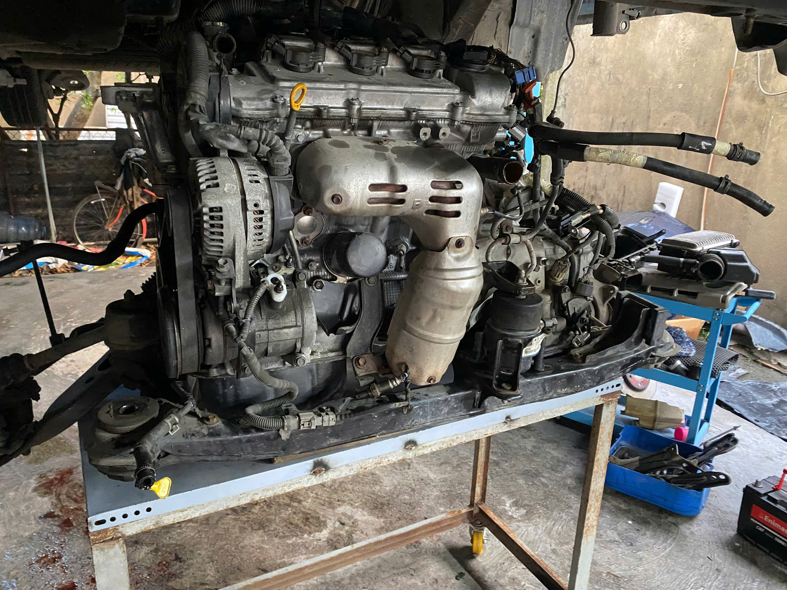
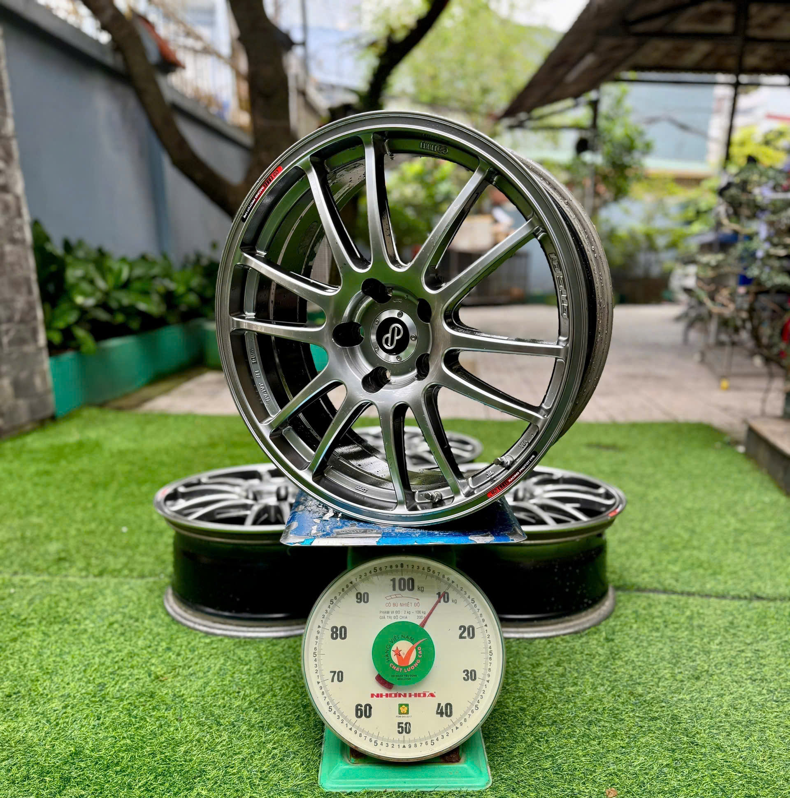
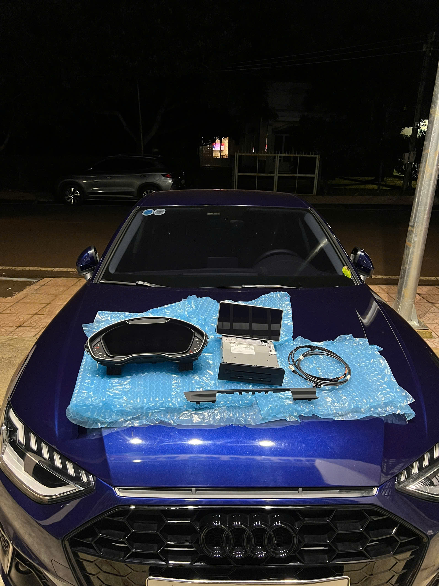
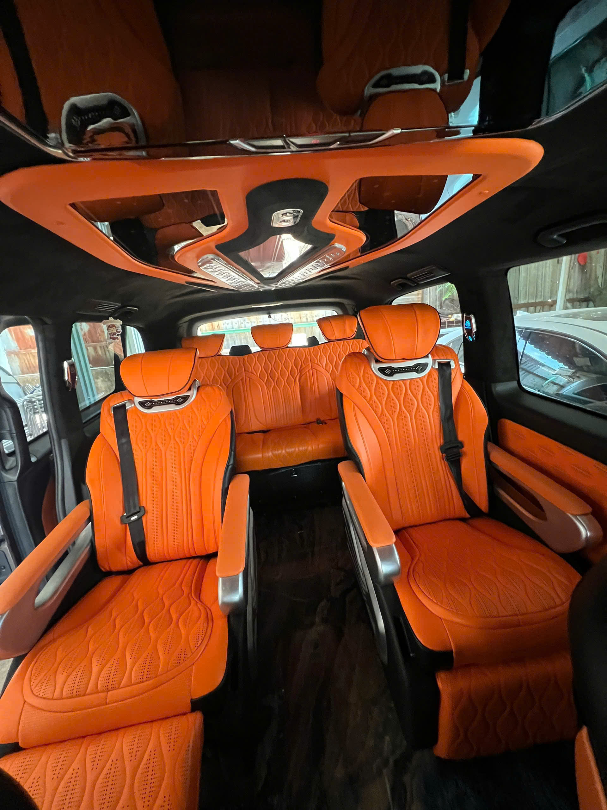
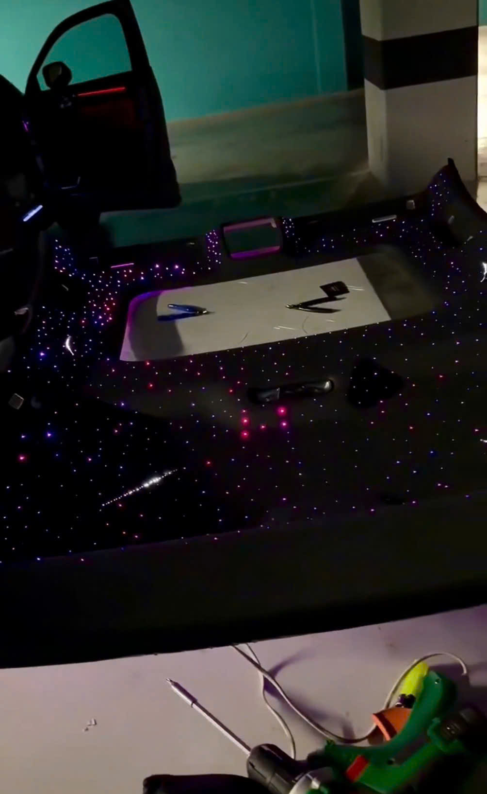
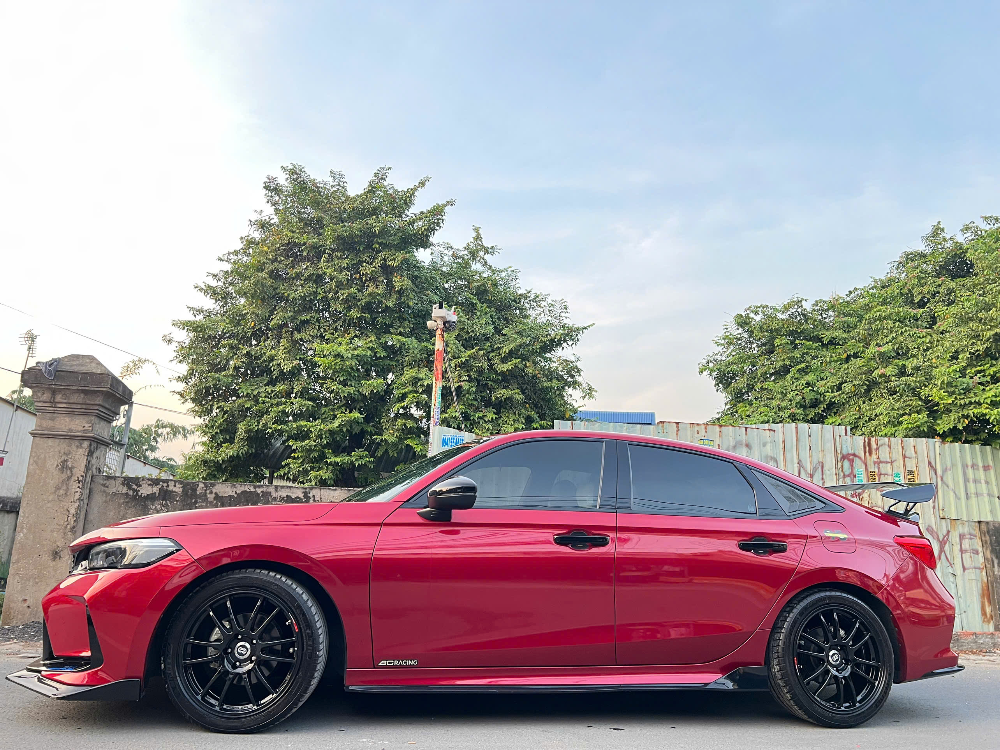
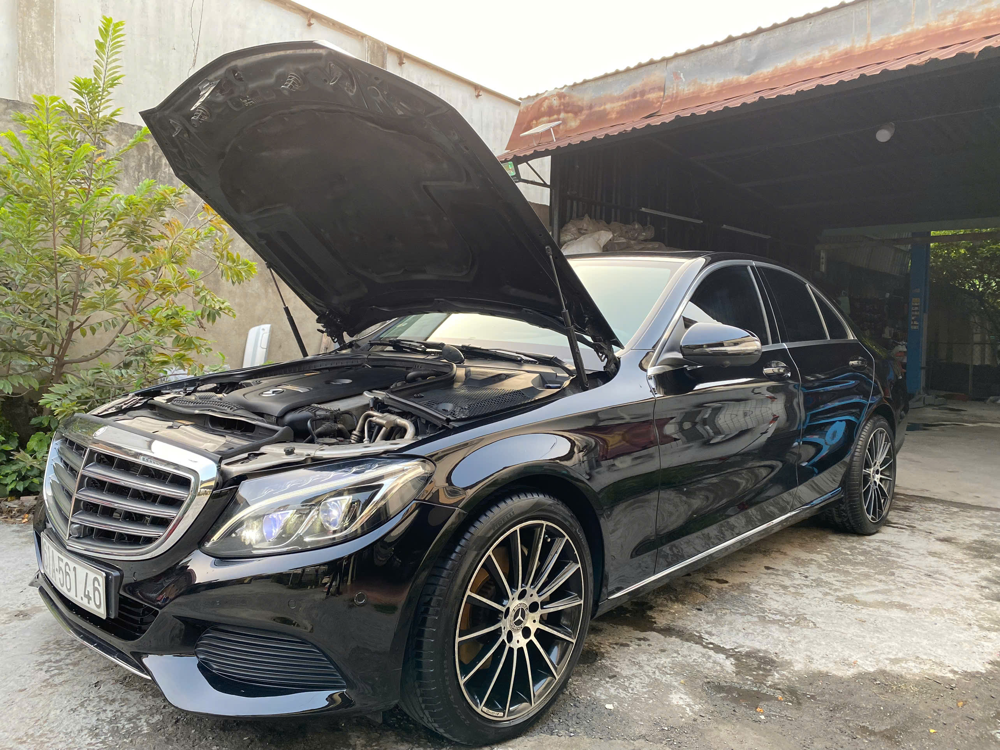

Chất lượng thay vì số lượng
Nhận số lượng xe vừa đủ để chăm chút tỉ mỉ từng chi tiết.
Private Auto Workshop
Không chỉ là nơi sửa xe, TT WORKSHOP là không gian dành cho những chủ xe muốn chiếc xe của mình được chăm sóc đúng cách, nâng cấp đúng gu và xử lý bởi người có tay nghề thật.
Tại đây, quý khách có thể khám phá các dịch vụ nổi bật như sửa chữa chuyên sâu, bảo dưỡng tận nhà, độ ngoại thất, nâng cấp nội thất xe sang, detailing cao cấp và đồng sơn PDR.
Hãy dành ít phút tham quan website để chọn đúng dịch vụ phù hợp cho xế cưng của bạn.
PRIVATE AUTO WORKSHOP
Mr. Công Tú trực tiếp kiểm tra, tư vấn và đưa ra phương án xử lý phù hợp cho từng chiếc xe. Từ sửa chữa, bảo dưỡng đến cá nhân hóa xe sang, mỗi xe đều được chăm chút như một dự án riêng.
Giới thiệu
TT WORKSHOP không định vị mình là một showroom hào nhoáng. Đây là một Private Workshop, nơi tay nghề, sự tỉ mỉ và phương án xử lý đúng được đặt lên hàng đầu.
Mỗi chiếc xe khi đến xưởng đều được chuyên gia Công Tú kiểm tra, tư vấn và đưa ra hướng xử lý phù hợp với tình trạng thực tế, nhu cầu sử dụng và ngân sách của khách hàng.
Ưu tiên kiểm tra kỹ, giải thích rõ, xử lý đúng nhu cầu thay vì làm đại trà.
Khác biệt
Nhận số lượng xe vừa đủ để chăm chút tỉ mỉ từng chi tiết.
Bắt đúng bệnh, sửa đúng chỗ, tiết kiệm thời gian và chi phí cho khách hàng.
Phụ tùng, đồ chơi, dung dịch detailing được tuyển chọn theo tiêu chuẩn rõ ràng.
Dịch vụ nổi bật
Bắt đúng bệnh - sửa đúng chỗ. Chuyên gia Công Tú trực tiếp xử lý hệ thống điện, động cơ, gầm bệ cho xe sang Mercedes, BMW, Audi và các dòng phổ thông.


Tư vấn và order Bodykit, nâng cấp đèn Bi-LED/Laser, đồ chơi công nghệ. Thế mạnh: order mâm Nhật, mâm Forged và hệ thống ống xả thể thao.


Bọc da Nappa cao cấp, độ ghế Limousine/VIP, trần sao, đổi màu nội thất với độ hoàn thiện tinh xảo.


Sử dụng dung dịch chăm sóc xe chính hãng từ Sonax, CarPro, Meguiar's, Gyeon, Koch Chemie...


Kỹ thuật vỗ nguội kéo móp không tì vết, bảo toàn lớp sơn zin. Dịch vụ đồng sơn đổi màu toàn xe với hệ thống sơn cao cấp chuẩn mã màu nhà máy.


Đặt lịch
Điền nhanh thông tin, hệ thống sẽ mở SMS với nội dung đặt lịch sẵn để gửi đến hotline xưởng.